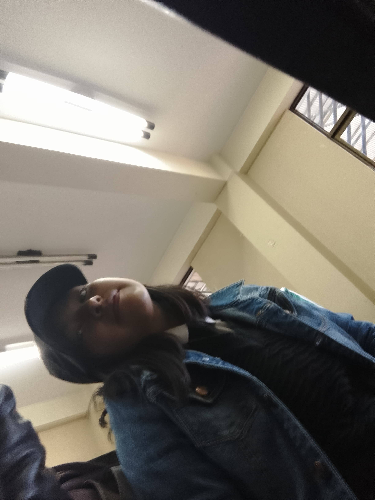

Quizá este debio ser la primer fotografía de todas en el carrussel, pues es antes del inicio, una foto que recuerdo tome para hacerte una broma, pero que en aquel momento ya me gustabas.
Amaba quedarme contigo hasta amanecer, no por el juego, sino porque hablarte, reir y pasar el tiempo contigo era lo maravilloso. No sabia que estaba pasando, solo sabia que contigo era diferente.
Odiaba y aún odio, tener que admitir que me gustabas y que empezaba a quererte, yo aquel tipo frio, seco, impoluto y que habia gritado a los 4 vientos que Nunca JAMAS caería en tus brazos, y al final terminé locamente enamorado de ti.
